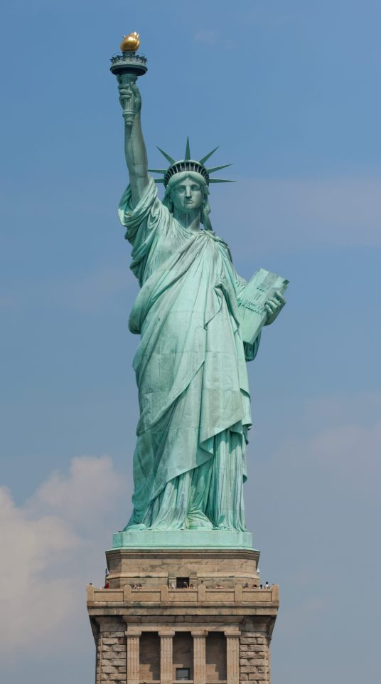
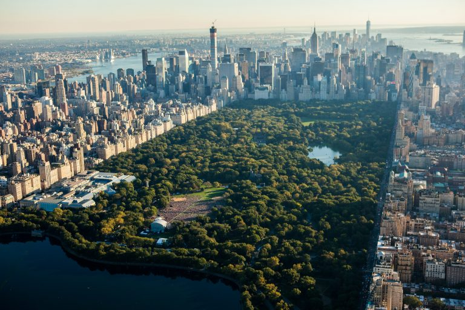
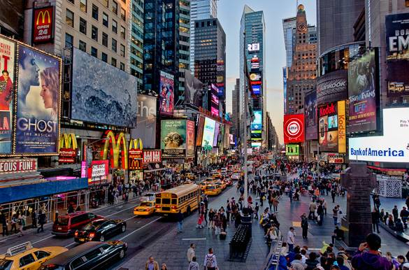
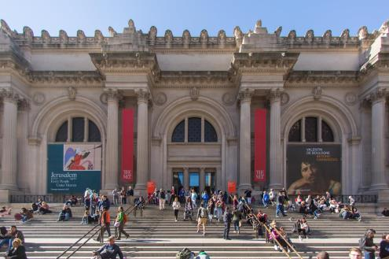

| Photo |
Description |
|  |
Statue of Liberty:
The Statue of Liberty was France's gift to America. Built in 1886, it remains a famous world symbol of freedom and one of the greatest American icons. It is one of the world's largest statues, standing just under 152 feet tall from the base to the torch, and weighing approximately 450,000 pounds.
|
 |
Empire State Building:
The Empire State Building is one of New York's most famous landmark buildings. The 381-meter-tall, 102-storey building was the tallest in the world until the 1 World Trade Center tower rose higher, 41 years later. Topped with a mooring mast for airships, the Empire State Building immediately became a landmark and a symbol for NYC when it opened in 1931.
|
|  |
Central Park:
A walk, peddle, or carriage ride through the crisscrossing pathways of Central Park is a must-do on anyone's New York City itinerary. In winter, you can even lace up your skates and glide across Wollman Rink. This huge park in the city center, a half-mile wide and 2.5 miles long, is one of the things that makes New York such a beautiful and livable city. Besides being a great place to experience a little nature, Central Park has many attractions within its borders, including the Belvedere Castle, Strawberry Fields, the Central Park Zoo, and the Lake.
|
|  |
Times Square:
Lined with huge, brilliantly lit billboards and screens, Times Square is a place best visited in the evening, but still exciting at any time of day. This is the location of New York's New Year's Eve Celebrations and the famous "ball drop" at midnight, when the square and surrounding streets are filled with people. Times Square is busy and perpetually crowded but has its own unique appeal. Bleachers set up at one end are a great place to take a break and appreciate the scene.
|
|  |
Metropolitan Museum of Art:
The Metropolitan Museum of Art, or the Met, as it is commonly known, was founded in 1870, and is one of the most famous museums in the United States. The permanent collection of The Met contains more than two million works of art, spanning a period of 5,000 years. Although the museum has three sites, the centerpiece is The Met Fifth Avenue. Highlights of the collection include American decorative arts, arms and armor, costumes, Egyptian art, musical instruments, photographs, and much more. Exhibitions bring some of the world's most famous works to the public.
|